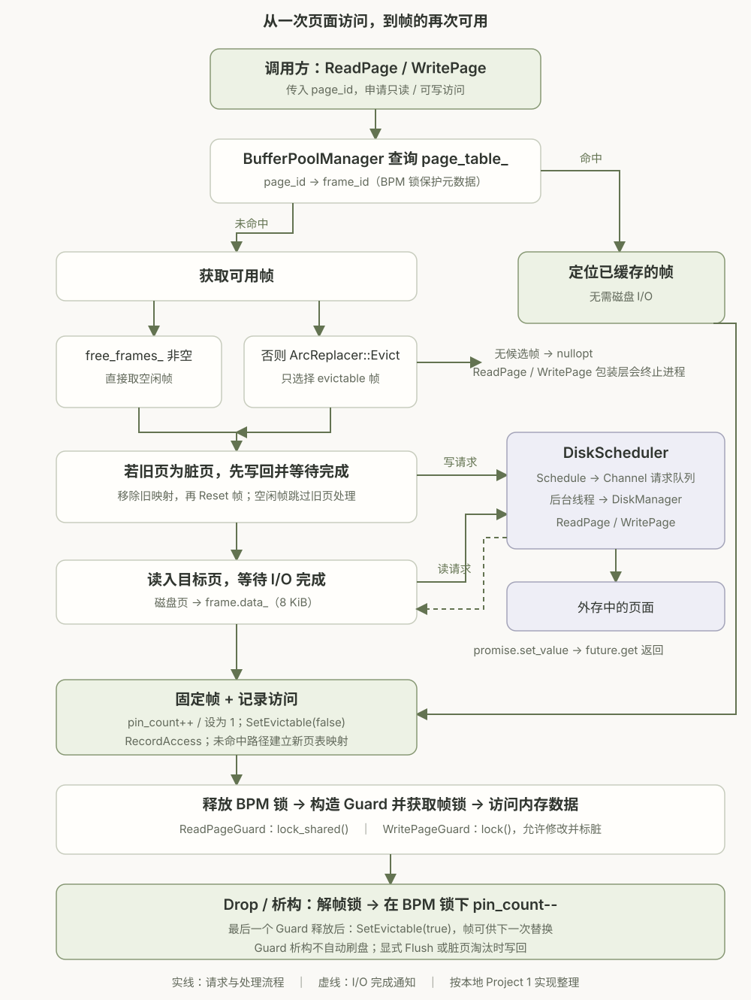

01 / 整体数据流
Project 1 的核心是 BufferPoolManager：对上提供页面访问接口，对下通过 DiskScheduler 调度磁盘 I/O，中间用固定数量的内存帧缓存页面。ArcReplacer 决定帧不够时淘汰谁，Page Guard 则负责一次访问期间的锁和固定计数。

一次访问的五个阶段
- 查页表。
CheckedReadPage/CheckedWritePage在 BPM 锁下查询page_table_。如果命中，取得对应帧，增加pin_count_、设为不可淘汰，并记录 ARC 访问，不发起磁盘读取。 - 未命中时取帧。优先使用
free_frames_；没有空闲帧时调用Evict()。若所有帧均不可淘汰，Checked 接口返回std::nullopt；本地ReadPage/WritePage包装接口会在失败时终止进程。 - 替换内容。若帧承载的旧页为脏页，先写回并等待完成；随后移除旧映射、重置帧，再把目标页读入帧。即使申请的是写 Guard，也需要先读入目标页，以保留未被覆盖的数据。
- 交付访问权限。未命中路径将 pin count 设为 1，建立页表映射，记录访问并禁止淘汰；然后释放 BPM 锁，由 Guard 构造函数获取对应帧的共享锁或独占锁，返回给调用方。
- 结束访问。Guard 的
Drop()或析构先解帧锁，再在 BPM 锁下减少 pin count；计数归零时才将帧设为可淘汰。页仍可以留在缓存中，供后续命中。
磁盘调度：后台执行，前台等待
DiskRequest 携带读写类型、page_id、指向帧数据的 char * 和 promise。Schedule() 将请求移入线程安全的 Channel；后台线程取出后调用 DiskManager::ReadPage 或 WritePage，再用 promise.set_value(true) 通知完成。页数据是定长二进制字节，不能按以空字符结尾的字符串理解。
这份缓冲池实现在换页路径中调用 future.get() 等待，且等待时仍持有 BPM 锁。因此，I/O 虽由后台线程执行，当前取页调用仍会阻塞，其他需要 BPM 锁的操作也可能等待。调度器异步执行和缓冲池接口是否阻塞，是两个不同的问题。
02 / 页、帧与缓冲池
我把外存中的数据按页（page）组织，把内存中容纳一个页的槽位称为帧（frame）。两者的数据容量相同，因此一个页可以完整装入一个帧。当前代码的 BUSTUB_PAGE_SIZE = 8192，即 8 KiB；大小来自本地配置，不能直接套用常见的 4 KiB 示例。
| 对象 | 含义 | 本地实现中的对应 |
|---|---|---|
| Page / 页 | 磁盘 I/O 与数据库存储的数据单位，以 page_id 标识。 | 由 DiskManager 读取和写入的定长页面。 |
| Frame / 帧 | 缓冲池中的内存槽位，可以先后承载不同的页。 | FrameHeader 管理 data_、pin count、dirty 标志和帧锁；数据缓冲区为 8 KiB，元数据另计。 |
| BufferPoolManager | 管理固定数量的帧，维护缓存命中与换页流程。 | frames_、page_table_、free_frames_、替换器和磁盘调度器。 |
| Page Guard | 一次访问的资源管理对象，管理帧锁与一次 pin 的释放责任。 | ReadPageGuard / WritePageGuard，引用承载目标页的 FrameHeader。 |
page_table_ 记录 page_id → frame_id。页被淘汰时，这个映射被移除，帧可以装载另一个页，而原页的数据仍保存在外存中。这里的页表是数据库缓冲池的映射表，与操作系统的虚拟内存页表处于不同层次。
本地 NewPage() 只通过原子计数器分配新 page ID，并不立即占用一个帧。后续通过读写接口访问该页，才走上述取帧和装载流程。
03 / RAII 与 Page Guard
RAII（Resource Acquisition Is Initialization）的关键是把资源的管理责任绑定到对象生命周期：构造有效对象时接管资源，离开作用域或因异常展开栈时，由析构函数自动释放资源。资源可以是内存、文件句柄，也可以是锁和一次页面固定。
这里的 RAII 对象是 Page Guard。ReadPage() / WritePage() 是返回 Guard 的函数；ReadPageGuard 和 WritePageGuard 是两个独立类，没有继承 Page。它们持有 FrameHeader 的引用，管理访问权限。
{
auto guard = bpm.WritePage(page_id); // 帧已经固定，Guard 获取独占锁
auto *data = guard.GetDataMut(); // 返回可写指针，同时标记 dirty
// 在 guard 有效期间访问 data
} // ~WritePageGuard() → Drop()：解锁、减少 pin count
// 此后不应继续使用刚才取得的 data 指针pin count 与帧锁各有职责。pin count 大于 0 表示帧仍被使用，不能被替换；帧锁控制多个线程能否同时访问同一份页数据。即使线程正在等待读写锁，也必须先固定帧，防止等待过程中帧被换成另一个页。
Guard 禁止复制，但支持移动。移动把释放资源的责任交给新对象，并让原对象失效；移动赋值还要先释放目标对象原来管理的资源。Drop() 会检查有效性，因此显式 Drop 后再析构不会重复解锁或重复减计数。
释放 Guard 与刷盘的区别
Guard 析构会释放锁和 pin，并不自动把页写回磁盘。修改后的数据可继续作为脏页留在缓冲池，等显式 Flush() / FlushPage() 或淘汰脏页时再写回。当前实现的 GetDataMut() 会标脏，WritePageGuard::Drop() 也会保守地再次标脏，因此即使写 Guard 没有实际改动数据，也可能触发后续写回。
04 / shared 与 unique：共享读、独占写
每个帧有一把 std::shared_mutex。shared 指共享所有权模式，unique 在这里指独占所有权模式：多个读者可同时持有共享锁；独占锁与同一把锁上的任何其他持有者互斥。这个关系由 C++ 标准草案的 shared mutex 要求定义。
| 比较项 | shared / 共享模式 | unique / 独占模式 |
|---|---|---|
| 典型用途 | 只读访问页数据。 | 读取或修改页数据。 |
| 获取与释放 | lock_shared() / unlock_shared() | lock() / unlock() |
| 可同时存在的持有者 | 多个共享持有者。 | 同一时刻只有一个独占持有者。 |
| 与其他读者 | 兼容，可并发读。 | 互斥，读者需等待。 |
| 与其他写者 | 互斥，写者需等待所有读者释放。 | 互斥，其他写者需等待。 |
| 常见 RAII 包装 | std::shared_lock<std::shared_mutex> | std::unique_lock<std::shared_mutex> |
| 本项目的 Guard | ReadPageGuard；GetData() 返回 const char *。 | WritePageGuard；提供 GetDataMut() 返回 char *。 |
shared_lock 和 unique_lock 是管理锁生命周期的标准库包装器。当前 Page Guard 实现直接调用帧锁的 lock/unlock 接口，再由自身的析构完成 RAII，并没有把这两个标准包装器作为成员。unique_lock 也能包装普通 std::mutex；它的名字本身不代表底层一定是读写锁。
“读锁”是访问约定，锁不会自动阻止代码通过其他可写指针修改数据；调用方仍必须遵守同一套同步规则。读锁也不能直接当作可重入锁或自动升级为写锁使用。
为什么还要一把 BPM 锁？
bpm_latch_ 是保护页表、空闲帧和 pin / 可淘汰状态转换的全局互斥锁；帧锁保护单个帧的数据；ArcReplacer::latch_ 保护替换器内部列表；dirty_latch_ 则同步 dirty 标志。它们保护的对象不同。
这份实现先在 BPM 锁下固定帧，再释放 BPM 锁，最后获取帧锁，避免等待帧锁时占着 BPM 锁。Guard 释放时先解帧锁，再取 BPM 锁减少 pin count。这里的帧锁也常称为 latch，用来保护内存数据结构，不等同于数据库事务层面的逻辑锁。
05 / ARC：在“最近”与“重复访问”之间自适应
缓冲池帧数有限，未命中时可能需要替换页面。ARC（Adaptive Replacement Cache）通过近期访问与重复访问两类信息调整缓存分配。原论文提出了在线自调节的思路，目标包括适应访问模式变化、抵抗一次性扫描对热点缓存的干扰。参见 Megiddo 与 Modha 的 ARC 论文（FAST ’03）。下面的列表操作和选择条件以我的本地实现为准。
5.1 四个列表分别记什么？
设缓存容量为 c，参数 p 表示近期列表的目标大小，初始为 0，范围为 0 ≤ p ≤ c。下面使用论文中常见的 T1、T2、B1、B2 命名，并对应到代码字段。
| 列表 | 本地字段 | 保存内容与作用 |
|---|---|---|
| T1 / 近期列表 | mru_ | 保存新进入且尚未再次命中的驻留页对应的 frame ID。 |
| T2 / 重复访问列表 | mfu_ | 保存已显示重复访问价值的驻留页对应的 frame ID；内部仍按访问新旧排序，不是按累计访问次数排序的 LFU。 |
| B1 / 近期幽灵列表 | mru_ghost_ | 保存从 T1 淘汰的页的身份与历史状态，不保留页数据，也不占用有效帧。 |
| B2 / 重复访问幽灵列表 | mfu_ghost_ | 保存从 T2 淘汰的页的身份与历史状态，用于识别重复访问页是否被过早淘汰。 |
本地代码中四个链表都是 begin() 为最旧端、end() 为最新端。驻留列表按 frame ID 查找；幽灵列表按 page ID 查找，因为帧被复用后，旧的 frame ID 已不能代表原页。幽灵命中仍是数据缓存未命中，需要从磁盘重新读页。
5.2 RecordAccess 的四种情况
- 命中 T1 或 T2：从原列表移除，放到 T2 最新端。T1 命中表示再次访问，晋升 T2；T2 命中则更新其访问顺序。
- 命中 B1：说明近期页被淘汰后又被访问。增大 p，提高近期列表的目标份额；删掉 B1 中的历史条目，把重新载入的页加入 T2 最新端。
- 命中 B2：说明重复访问页被淘汰后又被访问。减小 p，把更多目标份额留给 T2；删掉 B2 的历史条目，把该页加入 T2 最新端。
- 四个列表都未命中：按容量规则裁剪旧的幽灵记录，然后把新页加入 T1 最新端。
幽灵命中让 ARC 发现“刚才的淘汰是否损失了有用页面”。本地实现使用整数除法计算调整幅度，且在移除命中的幽灵条目前读取两边大小：
命中 B1：Δ = max(1, |B2| / |B1|)，p = min(c, p + Δ)
命中 B2：Δ = max(1, |B1| / |B2|)，p = max(0, p − Δ)
命中哪个幽灵列表，就说明那一侧需要更多保留机会。分母对应的列表包含当前命中页，因此不会为零。p 是淘汰选择的目标参数，不要求每一步 T1 的实际大小都恰好等于 p。
5.3 Evict 如何选择牺牲帧？
- 若
|T1| ≥ p，优先从 T1 最旧端寻找可淘汰帧；否则优先从 T2 最旧端寻找。 - 遇到不可淘汰帧就跳过；首选列表找不到候选时，转到另一驻留列表继续查找。
- 从 T1 淘汰的页进入 B1，从 T2 淘汰的页进入 B2。替换器返回 frame ID，实际写回旧页和读入新页由 BufferPoolManager 执行。
- 两边都没有可淘汰帧时返回
std::nullopt，即使 ARC 列表中仍有很多驻留页也不能强行淘汰。
本地版本与原论文的边界区别：当 |T1| == p 时，这里的 Evict() 直接优先 T1，不额外检查本次请求是否命中 B2；同时增加了跳过 pinned 帧、首选列表失败后尝试另一侧的处理。缓冲池在缺帧时先调用 Evict()，完成装载后再调用 RecordAccess()，因此本次幽灵命中对 p 的调整发生在本次选出牺牲帧之后。
5.4 用一组访问序列观察 p 的变化
设 c = 3、p = 0，依次访问 A → B → A → C → D → B → C → E → A。每次访问结束立即释放 Guard，假设所有驻留帧在下次请求时均可淘汰。列表从左到右为最旧到最新，结果按本地“先 Evict、后 RecordAccess”的顺序推演。
| 访问 | 事件 | p | T1 | T2 | B1 | B2 |
|---|---|---|---|---|---|---|
| A | 新页进入 T1 | 0 | A | — | — | — |
| B | 新页进入 T1 | 0 | A, B | — | — | — |
| A | T1 命中，晋升 T2 | 0 | B | A | — | — |
| C | 新页进入 T1 | 0 | B, C | A | — | — |
| D | 淘汰 B，新页进入 T1 | 0 | C, D | A | B | — |
| B | 淘汰 C；命中 B1，p 增大 | 1 | D | A, B | C | — |
| C | 淘汰 D；命中 B1，p 增大 | 2 | — | A, B, C | D | — |
| E | 淘汰 T2 中的 A | 2 | E | B, C | D | A |
| A | 淘汰 B；命中 B2，p 减小 | 1 | E | C, A | D | B |
连续命中 B1 后，p 从 0 增至 2，近期列表获得更大目标份额；之后 A 在 B2 中命中，说明重复访问页的保留空间需要增加，于是 p 又降至 1。这就是 ARC 通过历史命中反馈调整取舍的过程。
5.5 容量、可淘汰性与复杂度
实际保存数据的页只在 T1 和 T2 中，驻留页总数不超过 c。B1 / B2 只保存历史元数据；本地 RecordAccess() 对全新页插入前，若 |T1| + |B1| == c，删除 B1 最旧记录；否则若四表总条目数已为 2c，删除 B2 最旧记录，再插入新页。这样限制了历史记录规模。
ArcReplacer::Size() 返回的是可淘汰帧数量，不是全部驻留页数量。页面被固定后仍保留在 T1 / T2 中，但 evictable = false；最后一次取消固定时才恢复可淘汰。Remove() 用于移除指定帧的替换状态，与保留幽灵记录的 Evict() 不同。
哈希表配合链表迭代器，使本地记录访问时的查找、移动和删除通常为 O(1)。但 Evict() 要跳过不可淘汰条目，最坏需要扫描 O(c) 个帧；缓冲池还会扫描页表寻找牺牲帧对应的旧页 ID，也有 O(c) 的成本。不能把论文对原始 ARC 的复杂度描述直接当成本地整个换页路径的复杂度。
代码阅读索引
本文基于本地 cmu-15-445/bustub 中的实现整理，只摘取结构与行为，不附完整实验解答源码。后续实现或课程版本变化时，页大小、接口与 ARC 边界规则可能不同。
src/include/common/config.h：页大小配置。src/include/buffer/buffer_pool_manager.h、src/buffer/buffer_pool_manager.cpp：FrameHeader、页表、固定与换页流程。src/include/storage/page/page_guard.h、src/storage/page/page_guard.cpp：Guard 的加锁、移动、Flush 与 Drop。src/storage/disk/disk_scheduler.cpp、src/storage/disk/disk_manager.cpp：队列、后台线程及页面 I/O。src/include/buffer/arc_replacer.h、src/buffer/arc_replacer.cpp：四表状态、p 的调整与候选帧选择。